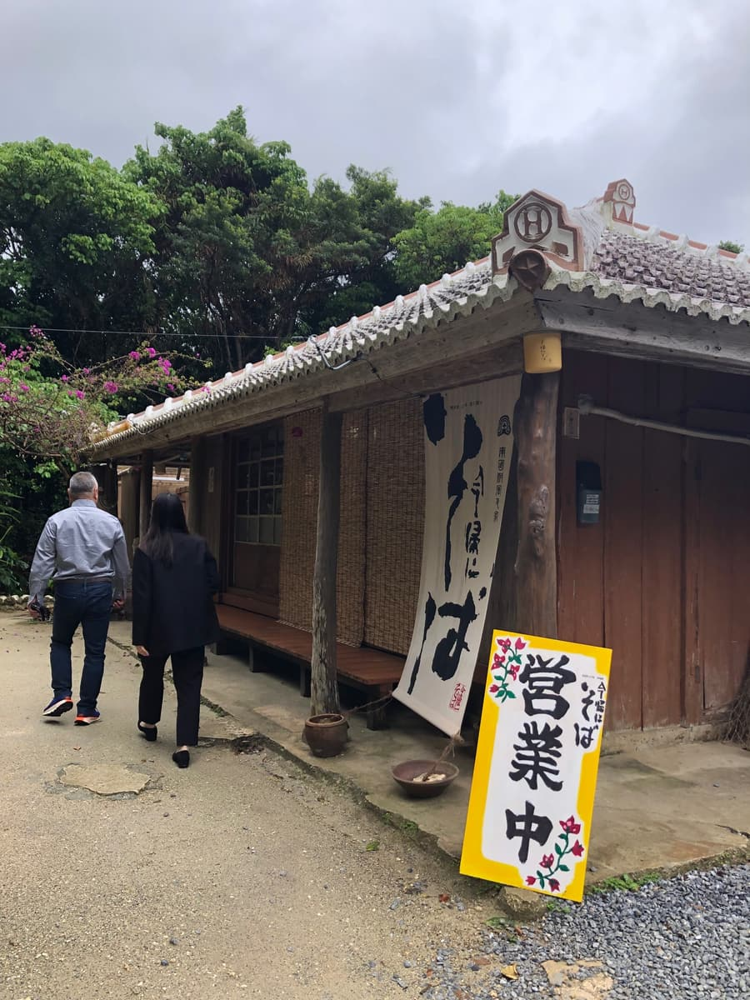
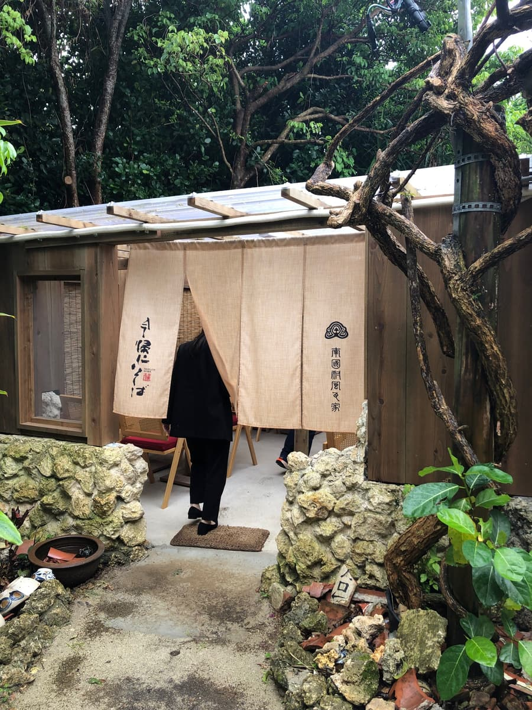
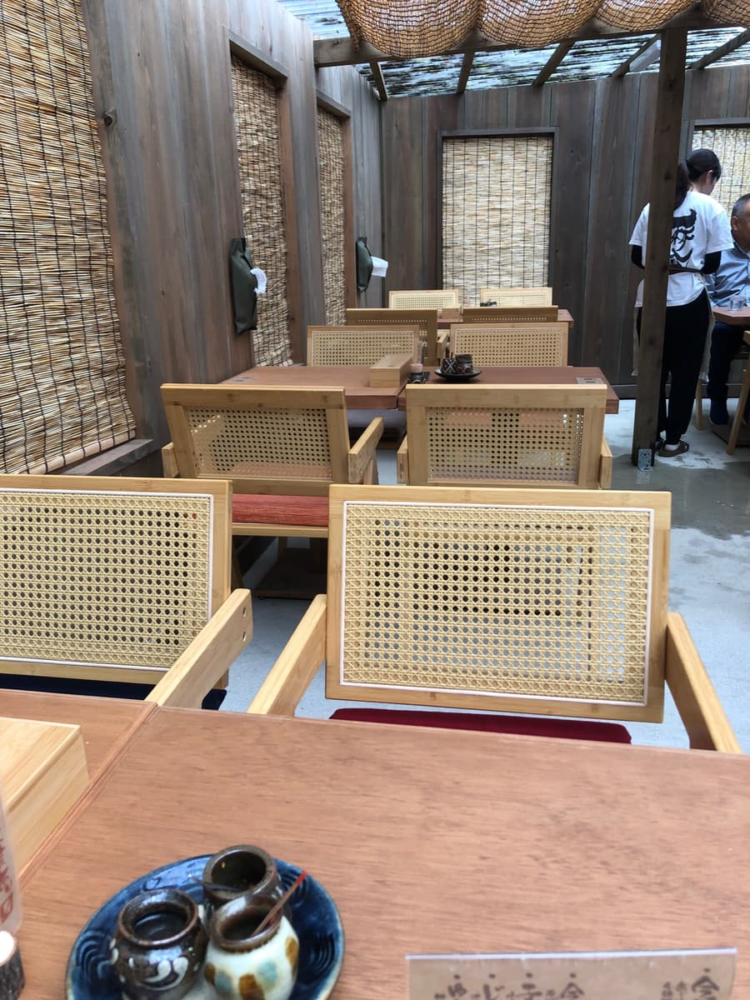
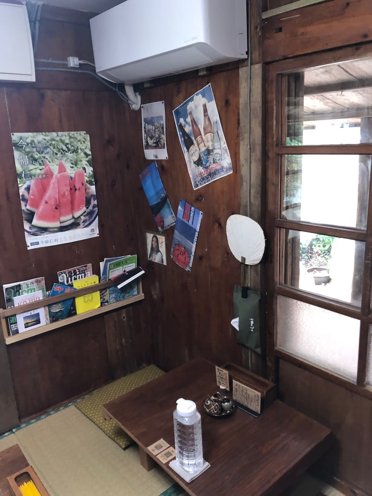
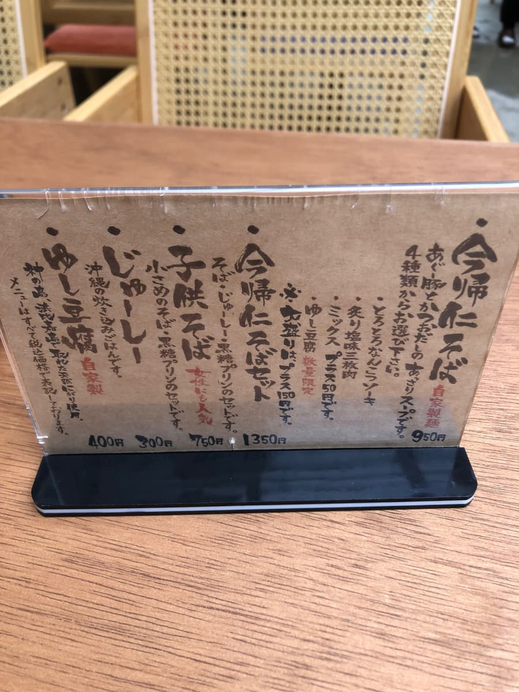
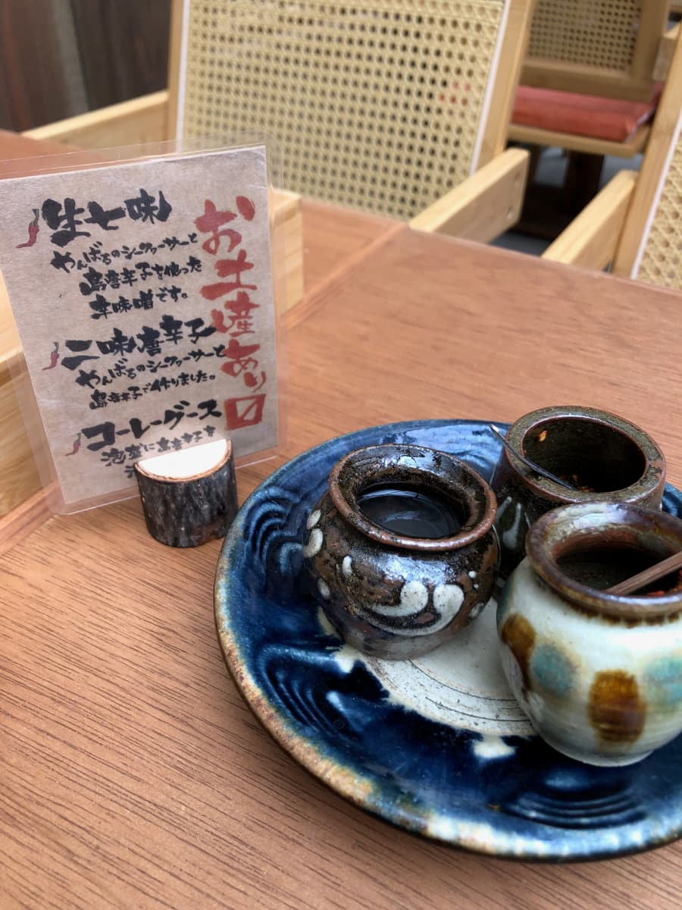
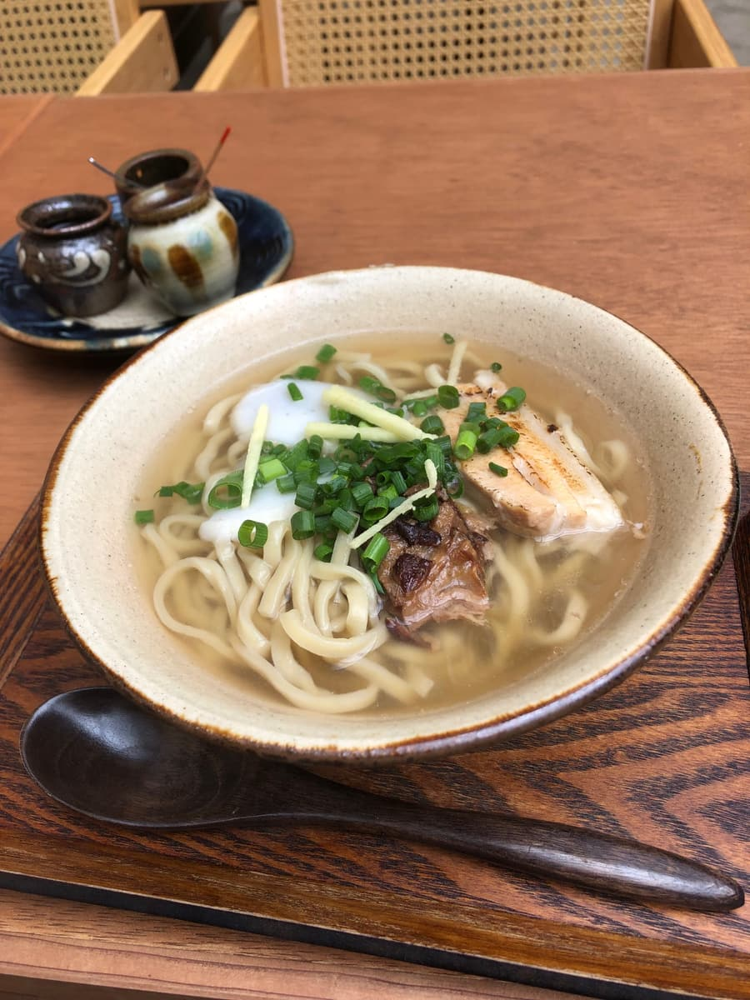
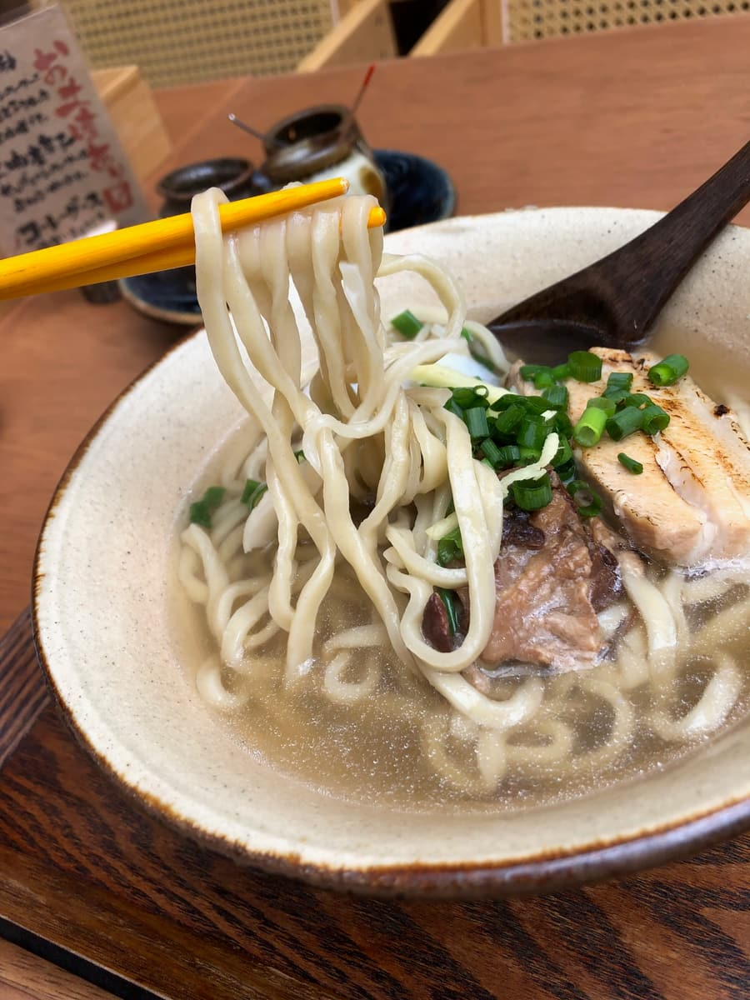

2025.4に食べました😊 今回は本島北部エリアの沖縄そば巡りで、今帰仁村諸志にある「今帰仁そば」さんに行ってきましたね🌺 今帰仁村と言えば世界遺産の今帰仁城跡や美ら海水族館にも近いエリアで、観光のついでに立ち寄りやすい場所にあるお店ですね😄

お店に到着して、まず目に飛び込んできたのが沖縄らしい瓦屋根の古民家。「南国村風の家」、「今帰仁そば」と大きく書かれた暖簾、そして黄色い「営業中」の看板が雰囲気を盛り上げてくれていますね✨ これぞ沖縄の古民家そば屋という佇まいです😊 外観だけでテンション上がる感じですね🎵

入口の暖簾をくぐる手前には、ゴツゴツとした琉球石灰岩の石垣やブーゲンビリアの花、ガジュマルのような木が植えられていて、めっちゃ沖縄感ありますね🌴 観光客の方々も写真を撮りたくなるような映えスポットになっていました📸

店内に入ると、これがまたおしゃれな造り😲 籐（ラタン）のお洒落な椅子とテーブルが配置されていて、簾（すだれ）越しに自然光が入ってくる解放感のある空間ですね。古民家の風情を残しつつも、新しさを感じる作りです🌸

店内には畳の小上がりスペースもあって、こちらは昔ながらの沖縄のおばーの家みたいな雰囲気😊 オリオンビールのポスターや今帰仁村のスイカのポスターが貼られていて、地元感も感じられますね🍉

メニューを見ると、看板メニューの「今帰仁そば」は950円。あぐー豚と鰹出汁の自家製麺で、具材は4種類から選べる仕組みになっていますね😄 「とろとろなんこつソーキ」「炙り塩味三枚肉」「ミックス」「ゆし豆腐（数量限定）」の中から選択する形で、今回は欲張ってミックス（プラス50円）を注文しました🍜 他にも子供そば（750円）、今帰仁そばセット（1350円）、じゅーしー（300円）、自家製ゆし豆腐（400円）などもありますね。

卓上には3種類の薬味が並んでいて、「生七味（やんばるのシークヮーサーと島唐辛子を使った辛味噌）」「二味唐辛子（やんばるのシークヮーサーと島唐辛子）」「コーレーグース」と、どれもやんばる素材にこだわった自家製の薬味でテンション上がりますね🌶️ お土産用にも販売しているようで、こだわりが感じられますね✨

少し待って、今帰仁そば（ミックス）が運ばれてきました🍜 うるま焼っぽい器に入った見た目はかなり映える感じで、トロっとしたゆし豆腐っぽい白いもの、千切り生姜、軟骨ソーキ、炙り三枚肉、ネギがバランス良く盛り付けられていますね😊
恒例のスープを一飲み。あぐー豚と鰹の合わせ出汁ということですが、んー、正直どっちもあまり効いていないあっさり系の味ですね🤔 悪い意味ではなくて、すごく優しい味わいで上品な仕上がりではあるのですが、もう少しあぐー豚のコクや鰹の風味がガツンと来ても良いかなーと個人的には思いました。観光客向けに万人受けする味に仕上げているのかもしれませんね😅

次は麺を頂きます🍜 自家製麺の中太のゆるい縮れ麺で、これはなかなか良い感じですね😋 しっかりとコシがあって、麺は普通に美味しいです👍
具材の三枚肉と軟骨ソーキはトロトロに煮込まれていて柔らかいのですが、ただ、1000円という価格の割にはサイズがちょっと小さめかなーという印象😅 そして軟骨ソーキの方はやや筋感が残っている部分もあって、もう一息ホロホロだったら嬉しかったですね🥩
評価（9点/15点）：古民家の風情ある外観と、おしゃれにリノベされた店内の雰囲気は抜群で、観光客にも人気が出そうなお店ですね😊 ただ、味の方は正直に言うと「普通」ですね🤔 あぐー豚も鰹もどっちも効いていないあっさり系のスープと、1000円の割には小さめの具材という点で、コスパ面ではもう一息という感じでしょうか🍜 今帰仁村観光や美ら海水族館の帰りに、古民家の雰囲気を味わいたい方には立ち寄ってみる価値はあると思いますよ😄
麺 ：★★★☆☆（3）
スープ：★★★☆☆（3）
具 ：★★★☆☆（3）